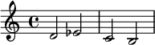

作品导览
写作这篇文章的初心是给想要了解肖斯塔科维奇作品、但不知道如何入手的朋友们做一个入门级的介绍。文章中包含了对应作品的创作背景、版本推荐和个人解读。
文章中的小标题标注了作品的英文全名，可以据此在音乐流媒体中搜索。嵌入的播放器是 Apple Music 的，如果已有订阅，可以在网页中登陆，对于其它平台也可以通过封面来寻找到相同的专辑。如果没有标注版本推荐的话，说明我没有特别对比过这首曲子的版本，只是放了我自己常听的……可以参考最上面的指挥推荐挑选一下。
指挥与乐团选择
因为作曲家的许多交响乐作品与创作的时代背景相关，所以我会优先选择具有相同文化背景的指挥和乐团。这里需要点明，“相同文化背景”不仅指苏俄，也包括前苏联成员国/前华约组织成员国，尤其是已经经历民主化的国家。另外，我不认同很多人说的“只有俄国人才能演好肖斯塔科维奇”，他作品中的时代性远大于民族性，而凡身处于极权铁幕下的，都是他的同时代人。
交响乐团
- 基里尔·康德拉辛与莫斯科爱乐乐团
- 肖斯塔科维奇四十多年的朋友，首演了肖四，（被穆拉文斯基鸽了之后）也接下了具有政治风险的肖十三首演
- 他将作曲家视为 “俄罗斯音乐的道德良知”，并仔细研究了作曲家的交响曲，他坚持认为这些交响曲 “与作曲家的人生经历密不可分”
- 库尔特·桑德林/米夏埃尔·桑德林
- 老桑德林是出身德国的犹太人，1936年因为纳粹迫害逃亡到苏联，在此后的近二十年与穆拉文斯基共同担任列宁格勒爱乐乐团的首席指挥，也与肖斯塔科维奇有着工作上的接触和私人的友谊
- 小桑德林1967年出生于东德，与德累斯顿国家管弦乐团录制过全套的肖斯塔科维奇交响曲，也值得一听
- 马里斯·杨松斯与巴伐利亚广播交响乐团
- 指挥来自拉脱维亚，曾经在列宁格勒音乐学院学习过，后来也师从过穆拉文斯基，我很喜欢他指的肖
- 叶夫根尼·穆拉文斯基与列宁格勒爱乐乐团
- 从肖五开始的很多交响乐作品都是交由他首演的，其中也有题献给他的作品，是肖很多年的朋友，不过他拒演肖十三之后两个人闹掰了……他的录音我倒没有特别喜欢的版本
- 根纳季·罗日杰斯特文斯基与列宁格勒/圣彼得堡爱乐乐团
- 其实没怎么听完，也不是不想鉴赏，但他的几段录音都是现场录音，咳嗽声太大了
- 提奥多·库伦奇斯与音乐永恒乐团/西南德广播交响乐团
- 私心放TC在这里是因为肖五现场太强了，从公开讲解来看他对肖的理解也非常好……录音很少，只有早年的肖十四，但西南德广播交响乐团有录制一些视频现场，另外两个乐团都上传过一些肖斯塔科维奇交响曲的公开讲解视频，内容都在油管
室内乐团
- 鲍罗丁四重奏
独奏家
- 姆斯季斯拉夫·罗斯特罗波维奇（大提琴）
- 罗！当之无愧的大师！肖斯塔科维奇的两首大提琴协奏曲都是题献给他的，他也完美演绎了这两首曲子，他也是肖塔的学生、朋友、最坚定的支持者
- 其实罗也做指挥，他指了肖的全集，不过我选着听了一些没有很喜欢，就不在指挥列表推荐了
交响曲
如康德拉辛所说，肖斯塔科维奇的作品与作曲家的人生经历密不可分，而我认为交响乐作品是其中最能体现作曲家身处的社会环境和时代性的。
另外也说一下我个人的态度吧……个人一方面很讨厌那种把肖斯塔科维奇作为刻奇的、奇观化的政治符号的行为；另一方面也很反感那种谈论肖斯塔科维奇的交响作品时避而不谈政治性，只说要多谈论音乐性的。艺术作品当然和创作者的经历息息相关，谈贝多芬、柴、马勒的时候知道结合创作背景，到肖斯塔科维奇就仿佛活在真空里了，就因为不敢直视房间里的大象（还是别人房间里的）？
Symphony No. 5 in D minor, Op. 47
应该是肖的交响曲里面最出名的一首了，贴一下之前写过的创作背景：
1936年，在斯大林观看肖斯塔科维奇所作的歌剧《姆岑斯克郡的麦克白夫人》后，《真理报》中刊登了题为《混乱而非音乐》的社论，对此作大行批判，肖斯塔科维奇的作品也因此遭到禁演。此后所写作的《第四交响曲》也因意识形态原因在压力下被迫撤回，被作曲家尘封多年，直到1961年才得以重见天日。当时，肖斯塔科维奇一度吐露心声：“如果他们砍断我的双手，我还是会用牙齿咬着笔继续创作音乐。”
文艺批判之后，随之而来的是严酷的大清洗。1937年春，肖斯塔科维奇的姐夫被捕，姐姐被流放至中亚，岳母被送至劳改营。5月下旬，曾给予肖斯塔科维奇诸多帮助的赞助人图哈切夫斯基元帅被指控犯有叛国罪，第二天就被枪决。据肖斯塔科维奇后来对同事的透露，他曾因此被传唤到列宁格勒的内务人民委员部总部接受审讯。大清洗时期，仅斯大林本人就签署了681692人的处决，而其中许多人所死于的罪名，其严重程度远不及与一位因叛国罪而被处决的国家元帅进行密切接触。
1937年11月，《第五交响曲》首次公演于列宁格勒这个在大清洗时遭受到无情镇压的城市，据一位目击者回忆，许多听众在第三乐章广板中痛哭出声。
肖五我之前写过更详细的乐评，这里就不复述了，简单来说，我个人的理解是这样的：第一乐章是人在恐怖威压中的挣扎；二乐章的谐谑曲是在一乐章后给观众喘息的，带有对一乐章中恐怖部分的滑稽和戏谑的讽刺；三乐章是一个极度痛苦的挽歌，在某一时刻化为巨大的、悲愤的控诉；末乐章我个人的理解是，悲剧。
第四乐章引用了作曲家在此前写作的《根据普希金诗句而作的四首浪漫曲》中的 Возрождение (原诗写于1819年，中文译本一般译作重生/复活)。这部作品在1941年才得以发表，因此，在《第五交响曲》首演时，没有人能了解到其中的关联。这首诗的译本都偏向于意译，在用语上有较多的修饰和润色，可能会偏离这里引用的本意。我尝试直译一下，其中的用词有参考冯春的译本，《第五交响曲》的第四乐章中引用了最后四句诗所对应的乐句：
野蛮的画匠昏聩地
拿起笔涂黑了天才的画作
将他非法的图画
在上面无谓地涂抹但随着时间的流逝，那些异样的色彩
也随着衰败的碎鳞剥落
天才的画作也在我们的面前
显出美丽依旧的本色错觉也因此消散
我饱受折磨的灵魂
向我展示了
最初纯洁岁月的幻象
这里的引用想要表达的或许是：真正的艺术哪怕被毫无道理的否认和玷污，但随着时间的流逝，外在的表象剥落后，也终有一天会展现出它永恒不变的价值。这或许可以被视为肖斯塔科维奇经历第一次政治谴责的想法，他将希望寄托给了时间。而现在我们也可以确认，时间的确做出了公正的裁判。
另外附上一些可供参考的介绍和赏析：
- 迈克尔·蒂尔森·托马斯：肖斯塔科维奇第五交响曲赏析
- 音乐导赏 | 肖斯塔科维奇《第五交响曲》
- Currentzis & MusicAeterna Shostakovich Symphony No.5 Rehearsal
版本推荐
马里斯·杨松斯与巴伐利亚广播交响乐团
我平时一般就听这个，杨松斯这版总体我都很喜欢，尤其是第一乐章呈现出的压迫感，以及第二乐章带一些轻盈的戏谑、又有些冷幽默的处理。
库尔特·桑德林与柏林音乐厅管弦乐团(1984)
“无可挽回的悲剧”。
这一版的整版都被一种悲剧性所笼罩，前两个乐章我不太爱听，因为我觉得这部作品的情感表述应该更丰富一些，不是通篇都是这么悲伤。但这一版的后两个乐章是我非常喜欢的诠释，第三乐章凄怆到能让人落泪，第四乐章也采用了少见的悲剧性结尾处理。
之前听的TC现场的末乐章的处理中，我很喜欢的一些部分也和这版有着相同的处理，比如开头那种“被迫着”的极快，还有中段那段被处理的像是心跳的定音鼓。这一个版本的尾声中的重复弦乐单音，被诠释成了悲切之声。
关于肖五结尾的争论，一般集中在“真实的胜利”或是“虚假的狂欢”中。我认为肖五的结尾是悲剧的理由是，第三乐章悲痛至极的广板是乐曲的重心，后面紧接着一个所谓的胜利乐章，事实上无法消解这份悲剧性。而当时的社会环境，却只能容许一份结尾是“胜利”的作品。而结尾那个在“胜利”中无论如何都令人疑惑的弦乐单音，在悲剧意味的处理下却是自洽的。
肖的朋友，包括老桑德林和罗斯特洛波维奇，在指挥肖五的时候都用了这种悲剧性的处理，我觉得不是《见证》的影响（罗90年指挥完全套肖交，98年还骂《见证》是垃圾呢，零几年才改变态度），不知道肖有没有私下跟他们谈论过肖五。
Symphony No. 9 in E-flat major, Op. 70
我政郁就听这个。背景是二战胜利，苏联政府希望他能像贝多芬等其他作曲家一样，将《第九交响曲》写成一部规模宏大的胜利颂歌，用以赞颂苏维埃，他也尝试写过，并将完成的部分给自己的朋友私下听了（这一版废弃作品的乐谱于2003年被发现），但是他最后没有写下去，于是放弃了。最终的《第九交响曲》则是现在这份气氛轻松，带有谐谑甚至讽刺意味的小作。
一年之后的大会上，批斗他的文章说他写的东西“玩世不恭、恶毒的怪诞、无情的嘲笑和讥讽、强调生活的丑陋和残酷、风格化的冷酷讽刺”，太对了哥，我就爱听这个，我都说不出这么多词。
版本推荐
马里斯·杨松斯与巴伐利亚广播交响乐团
主要是我比较喜欢第一乐章轻盈戏谑的处理，不喜欢太四平八稳或者太尖刻的。杨松斯这版我很喜欢，能把我的政治抑郁调理得很好。总之就是这个交响乐，这个谐谑曲，它得让人笑出来。
下面这一段是肖斯塔科维奇在1935年左右的信件里所写的内容，这时，他还处在没有经历过命运磋磨的、比较意气风发的阶段，我觉得这可以作为他所有作品中谐谑部分的注脚：
但是什么才算是人类情感呢？当然不仅仅是抒情、悲伤、悲剧？难道笑声不也可以获得这一崇高的称号吗？我想在“严肃”的音乐中争取合法的笑声。当听众在我的交响音乐会中放声大笑时，我不会感到震惊，相反，我会感到很高兴。
Symphony No. 7 in C major, Op. 60
第七交响曲《列宁格勒》，写于第二次世界大战的列宁格勒保卫战期间，同时具有反法西斯侵略和反极权统治的主旨。
肖斯塔科维奇第一乐章中著名的主题首先是斯大林主题（作曲家的密友都知道）。 战争开始后，作曲家将其称为反希特勒主题。 后来肖斯塔科维奇将“德国”主题称为“邪恶主题”，这是绝对正确的，因为这个主题既反希特勒又反斯大林，尽管世界音乐界只关注第一主题两个定义中的一个。
那天傍晚……我又去找肖斯塔科维奇夫妇喝茶。他们自然又在谈论交响乐。然后德米特里·德米特里耶维奇沉思着说：“当然是法西斯主义。但音乐，真正的音乐，从来都不是依附于某个主题的。法西斯主义不仅仅是国家社会主义。这种音乐是关于恐怖、奴役和精神束缚的。”后来，当德米特里·德米特里耶维奇熟悉了我并开始信任我时，他直接告诉我，第七交响曲（以及第五交响曲）不仅是关于法西斯主义的，也是关于我们的制度的，总之是关于任何极权主义的。
我个人想提及的一点是，虽然“反极权统治”或者更露骨的“反斯大林”这一隐藏主题在被揭发后颇具颠覆性，但也不能忽视作曲家对战争所造成的创伤的痛恨、爱国冲动（文化意义上的国家而非政府）、对故乡的眷恋和对受难同胞深深的共情，这是他性格底色中的人性关怀，也是不容抹杀的。
三周后，他在《真理报》上发表了一篇鼓舞人心的文章，强调了《第七交响曲》背后深深的爱国主义冲动：
我们正在对抗希特勒的战争是一场极其正义的战争。我们正在捍卫祖国的自由、荣誉和独立。我们正在为人类历史上的最高理想而奋斗。我们正在为我们的文化、科学、艺术以及我们创造和建设的一切而战。苏联艺术家永远不会置身于理性与蒙昧、文明与野蛮、光明与黑暗的历史对峙之外……我将我的第七交响曲献给我们与法西斯主义的斗争，献给我们即将战胜敌人的胜利，以及我的家乡列宁格勒。
他坚称第一乐章的“重心”不是“入侵部分”（记者通常首先询问的部分）。相反，该乐章的核心是入侵部分之后的悲剧音乐，作曲家将其描述为“葬礼进行曲，或者更确切地说，安魂曲”。 他接着说：“安魂曲之后，是更悲惨的一幕。我不知道如何形容那段音乐。也许是母亲的眼泪，甚至是悲伤到流不出眼泪的感觉。”
版本推荐
基里尔·康德拉辛与莫斯科爱乐乐团
肖七录音我只推这个版本，这个入侵主题的处理方式太狠了，插上耳机听有那种脊背发凉后背冒冷汗的感觉，非常骇人的威压，没在夸张……
提奥多·库伦奇斯与西南德广播交响乐团(2019)
- SWR 官网: Teodor Currentzis | Schostakowitsch: Sinfonie Nr.7 (Leningrader) | SWR Symphonieorchester
- Bilibili：库伦齐斯指挥肖斯塔科维奇《第七交响曲》SWR Kultur
TC 极致的激烈与抒情的风格真的很适合指肖斯塔科维奇，极度的恐怖和极度的悲伤都能被演绎出来，真强啊……但他太喜欢极弱处理了，导致他录音录像的效果都没有现场那么好。
唉，记得这个视频的 YouTube 下有一个评论：
What an age this is! A Greek conductor - home in Russia - makes Germans cry while playing The Leningrad Symphony. What more messages of peace do we need?.. splendid this is, truly.
这是一个怎样的时代啊！一位身在俄罗斯的希腊指挥家在演奏《列宁格勒交响曲》时让德国人落泪。我们还需要更多的和平信息吗？真是精彩绝伦。
但是很遗憾，世界还在变坏，现在是比2019年更糟糕的时代。
Symphony No. 8 in C minor, Op. 65
写于第二次世界大战，计划中的“战争三部曲”中的第二部，也是他的所有交响乐中悲剧性最浓郁的一部作品，可以被认为是“给所有受害者的安魂曲”。其中第三乐章被解释为对战争的描绘，而老桑德林将它解释为解释为苏联制度“对个人的碾压”。它最终爆发为“自我毁灭的巨大高潮”。
这首曲子也是他的第二次政治谴责的罪名之一，因为战争即将胜利，而你居然写了一首极度悲观的交响乐？有时候觉得，肖斯塔科维奇在对自己作品的公开解释中，有很多有意识的胡说八道。比如这个第八交响曲，他在报纸上这么说：
第八交响曲包含许多悲剧性和戏剧性的内心冲突。但总的来说，这是一部乐观、肯定生命的作品。
我可以用六个字来概括我的新作品的哲学理念：生活是美丽的。一切黑暗和阴沉的事物都会腐烂、消失，美好的事物将会胜利。
但是这首曲子表现的是……纯粹的黑暗与绝望，恐怖的威压，人的极度悲伤，难以承受的痛苦。最后那个寂静深远的结尾，真的是美好的事物胜利了吗？似乎只是幸存了下来。
库伦奇斯在2023年和SWR有一次对肖八的公开排练和讲解，但是我还没有看，姑且贴一下:
桑德林对乐曲中悲剧性的表现令我非常触动，所以是听的他的版本。
Symphony No. 10 in E minor, Op. 93
《第十交响曲》是在斯大林死后写作并发表的，与《第九交响曲》间隔了八年。这期间肖斯塔科维奇没有创作交响乐作品。第二次政治谴责让他的生活痛苦不堪，他的大部分作品被禁演，教职被开除，作品与人格遭受抨击，而在第一次政治谴责中支持过他、帮助过他的朋友们，或死于大清洗，或因疾病而去世。他不可避免的选择了公开悔罪，在他向格利克曼的回忆中说：“十二年前我还年轻，能够更好地应对各种责难。我老了，我不行了。”
1953 年，斯大林逝世后不久，肖斯塔科维奇回顾了他这一时期的生活：“当他们批评我的形式主义时，你不会相信我收到了多少封来自陌生人的毒笔信，这些陌生人几乎不懂音乐。信中有这样的表述：你应该被处决，被杀死，被消灭，你这个恶棍，等等。”
这些年他在写作电影配乐，或是政治性曲目以维持生计，直到1953年，斯大林去世。而在之后的赫鲁晓夫解冻中，呈现出较斯大林时代更开放的政治和文化氛围，令他得以写作并发表《第十交响曲》。
这首曲子是 DSCH 动机（作曲家姓名缩写的签名动机）第一次出现在他的交响乐作品中。我认为 DSCH 动机代表着作曲家强烈的自我意味。

长达23分钟的第一乐章非常沉重，至于这份沉重在描绘什么，我认为是斯大林时代的压迫，与当时人们的苦难。
肖十和肖五有一些共同点：一是它们都是在经历了政治谴责后发表的第一部交响乐作品；二是它们的表意、以及终曲的解释都众说纷纭，没有统一的说法；最后，其实这两部作品都引用了作曲家同时期为普希金的诗歌而作的歌曲。肖十引用的是《我的名字对于你有什么意义？》（写于1830年，冯春译）：
我的名字对于你有什么意义？
它将消失，就像远方拍岸的浪
发出的低沉凄凉的声音，
就像密林里夜间的声响。它会在你的纪念册上面
留下没有生气的痕迹，
就像墓碑上面的花纹，
用的不知是哪一种文字。它有什么意义？在新近发生的
扰人的激情里，它早已被忘记，
它不会让你的心灵产生
那种纯洁而撩人的回忆。但在悲愁的日子，寂寞的时候，
请悄悄地呼唤我的名字；
说一声：世界上还有人记得我，
有一颗心没有把我忘记……
这里可能有诉情的意味。肖有时候会将感情生活作为密码埋进作品，很多时候是无望的爱，比如肖五比才的《卡门》和肖十第三乐章的埃尔迈拉动机，但我个人认为这无关整部作品的主旨表达，而是暗语式的编码。（不太想过多评价作曲家的私生活，不过还是说一下他和第一任妻子尼娜是开放式婚姻，互相见过对方的情人，所以倒没有出轨的说法。）
第三乐章的 DSCH 动机和埃尔迈拉动机交替出现，但始终没有结合在一起，可以结合信件中的表述考虑：“我们的道路会相遇吗？也许永远不会。这有太多，太多的原因了。”而根据信件的透露，这段动机的组合其实也是对马勒《大地之歌》中猿啼的引用。《大地之歌》的文本取材自一组中国诗，猿啼对应的文本出自李白《悲歌行》：
悲来乎，悲来乎。
天虽长，地虽久，金玉满堂应不守。
富贵百年能几何，死生一度人皆有。
孤猿坐啼坟上月，且须一尽杯中酒。
关于猿啼的意味，这里的原诗、以及马勒想要表达的都是——死亡。肖十还加上了丧钟般的打击乐，是谁的死亡呢？我想不是作曲家的，虽然他的确在这次政治谴责中尝试过自杀，但我觉得这里表达的死亡不是主动结束生命，而是命运般的大限将至。
第二乐章被《见证》称为是“对斯大林的肖像”，但没有其它旁证。如果对这本书抱有质疑，也可以认为孤证不立。但是单就第二乐章给我的印象而言，这一乐章同时蕴含着恐怖、威压与对此刻薄的讽刺。他的确在这一时期的其他作品中讽刺过斯大林，《第一大提琴协奏曲》中对《苏丽珂》的讽刺性引用是在嘲讽斯大林的音乐品味，而1989年才得以公开的《反对形式主义的西洋镜》中“具有格鲁吉亚口音的一把手同志”无疑是斯大林：
叶季尼岑发表的言论中有典型的“斯大林讲话那种陈腔滥调、还有翻来覆去地说同一个词，以及那种自命不凡的逻辑、加之令人反胃的一讲再讲、教理问答般自问自回的修辞，再来个双重否定”，这些就“揭示出了斯大林叙事主要的特性——在没有内容的语法结构中大开其口的一片空”。歌手演唱叶季尼岑部分时通常刻意使用高加索口音。
斯大林死于 1953 年 3 月，这部交响曲是在 1953 年 7 月至 10 月期间创作的。第三乐章的死亡意象，死的是谁呢？真难猜啊。
有一些评论认为第三乐章的 DSCH 动机展现的是个人对苦难的斗争和最终的胜利，但真的是胜利吗……我的理解里DSCH 动机听上去本身是十分阴暗的，结合乐曲表现，感觉也不是战胜了，而是熬死了啊。
第四乐章又出现了经典的终曲问题，我的解读仍然不是标准答案。一开始仍然是十分阴郁的，其后虽然是小调，但并没有那种极度悲伤的感觉，而且时常穿插一小段明亮的引子。我怀疑这里指的是葬礼，人们需要在要求下表现得悲伤，但喜悦已经时不时透露了出来。
而这段明亮的引子最后让弦乐和长笛依次引出了一段极为灵动的旋律，即使不考虑“解冻”的时代背景，给我的直觉感受也是化冻的新绿和初春的鸟鸣，而这段欣喜的旋律逐渐演变成带有癫狂意味的狂喜，然后突然被一个沉重的DSCH动机与定音鼓砸断，沉默之后，引出一段极为内省的旋律；之后喜悦重燃，重新推向狂喜，但是直到胜利和疯狂的结尾欢庆中，下行的DSCH动机仍然像是“宴会中的幽灵”一样如影随形。
如何理解这里的 DSCH 动机，结合当时解冻时代乐观的氛围，我认为是肖斯塔科维奇的诘问：独裁者死了，但我们的生活会随之好起来吗？
对于斯大林之死所暗示的政治分水岭，肖斯塔科维奇私下里对未来的前景保持着清醒的认识。弗洛拉·利特维诺娃回忆说，虽然他表现出一种如释重负的感觉，但他并没有感到欣喜若狂。当年轻的杰尼索夫问他是否认为现在会发生更好的变化时，肖斯塔科维奇回答说：“爱迪克，时代是新的，但告密者却是旧人。”
Symphony No. 4 in C minor, Op. 43
由施蒂德里指挥的列宁格勒爱乐乐团定于1936年12月11日举行《C小调第四交响曲》的首演。肖斯塔科维奇承认，他“吓得浑身发抖”。他的担心是有根据的。音乐会没有如期举行。当天上午，《苏联音乐报》上刊登了一则简短的公告：“作曲家肖斯塔科维奇向列宁格勒爱乐乐团发出呼吁，要求从演出中撤回他的《第四交响曲》，理由是这部作品与他当前的创作理念完全不符，对他而言，这部作品代表了一个早已过时的阶段。”
与作曲家一起参加排练的伊萨克·格利克曼回忆了《第四交响曲》撤回的情况：
我不知道德米特里·德米特里耶维奇是怎么想的，但我从音乐厅的气氛中感觉到了怀疑。在音乐界，更重要的是在边缘圈子里，一直流传着这样的传言：肖斯塔科维奇不顾批评意见，写了一首难度极高的交响曲，充满了形式主义。
然后在一个晴朗的日子里，作曲家联盟秘书 V.E.Iokhelson 和一位来自市党机关总部的官员一起出现在排练现场，之后是爱乐乐团总监、职业钢琴家伦津，他邀请德米特里·德米特里耶维奇到他的办公室……十五到二十分钟后，德米特里·德米特里耶维奇回来接我，我们步行离开……
我对我沮丧的同伴长时间的沉默感到困惑和不安。最后，他用一种平淡的、几乎毫无感情的声音说，这部交响曲不会上演，在伦津的坚持建议下，它已经被撤回了。由于不想诉诸行政手段，后者说服作曲家本人同意撤回交响乐的演出。
在开始写作这部作品时，肖斯塔科维奇还没有经历过此后的磨难，当时28岁的他虽然性格内敛，但仍然有年轻人个性张扬的一面。在接受报纸的采访时，他说：“走一条平坦的路固然会比容易，但这也是非常愚蠢、乏味而且无希望的……”最后的乐章是在《真理报》运动发起后写成的，没有对批评界的愤怒做出明显的承认或让步。他尝试把作品交给其他音乐家朋友，希望他们提出意见免再被批评，不过他仍对自己的创作理念表示坚持：“我[的音乐]是为自己而创作，而不是为《真理报》。”
《第四交响曲》直到1961年才得以重见天日。这部作品并不像此后的那些作品一样，与社会背景有着深刻的关联，因此，可以更多的从音乐性上去探讨。这是一部实验性的、现代的、庞大的“马勒式”的作品，年轻的作曲家令人惊艳的配器天赋和乐思在其中体现得淋漓尽致，评论界为这部作品的深度、尺度和“巨大的气息”所震撼。可以说，这部作品展现的是一种可能——如果没有此后的那些遭遇，作曲家的作品本可以是怎样的。
在晚年，肖斯塔科维奇罕见的回顾了自己的职业生涯：
“你问如果没有‘党的领导’，我会不会有所不同？是的，几乎可以肯定。毫无疑问，我在创作《第四交响曲》时所追求的路线会在我的作品中更加坚定和鲜明。我本可以表现出更多的才华，使用更多的讽刺，我本可以公开表达我的想法，而不是不得不诉诸伪装；我本可以写出更纯粹的音乐。”
室内乐
我觉得比起更具社会意义的交响乐作品，协奏曲和室内乐作品更多表述了肖斯塔科维奇更为私人的内心一面。一些作品甚至可以视为他内心最私密的情感表达。
弦乐四重奏
String Quartet No. 8 in C minor, Op. 110
《第八四重奏》写作于1960年，肖斯塔科维奇曾在此前被迫入党，根据传记的记载，在莫斯科即将启动他入党计划的会议之前，他在列宁格勒陷入了情绪崩溃。他的朋友通过将他扣留在列宁格勒避免了此次危机。而在此后的德累斯顿之行中，他没能写出给电影的配乐，反而在三天时间内写完了《第八四重奏》。
他将这部作品视为自己的悼亡之作，他曾向女儿表示这部作品是他的自传体四重奏，而对多个朋友说这是一部可以在自己葬礼上演奏的曲目。而据列别丁斯基的说法，肖斯塔科维奇计划从德累斯顿回来后自杀，但由于他藏匿的安眠药被偷偷拿走，这一计划失败了。
根据传记中引用的格利克曼的说法：
[……]但第二天一早，德米特里·德米特里耶维奇就打电话要求我立即去见他。
当我瞥见他时，我被他痛苦的面容、不安和迷茫的表情所震惊。他连忙把我领进他睡觉的小房间，瘫软地倒在床上，放声大哭。我惊恐地想知道他的家人是否发生了可怕的事情。面对我的提问，他含着泪水含糊不清地咕哝道：“他们一直在纠缠我，他们一直在追杀我。”
我从来没有见过德米特里·德米特里耶维奇处于这样的状态。他非常歇斯底里。我给他倒了一杯凉水，他咬牙切齿地喝了下去。大约一个小时后，他才缓过神来，告诉我不久前在莫斯科发生在他身上的事情。在赫鲁晓夫的倡议下，组织决定让他担任苏维埃联邦社会主义共和国作曲家联盟主席，而党员身份是担任这一职务的必要条件：
“ [……]我完全傻眼了，我竭尽全力拒绝这份荣誉。我抓住了救命稻草，说我从未掌握马克思主义，他们应该等我掌握了马克思主义再说。然后我为我的宗教信仰辩护。然后我又说，没有党员身份也可以当主席，我以康斯坦丁·费丁和列昂尼德·索别利奥夫为例，他们都在作家协会担任领导职务，但都不是党员。波诺斯波夫驳斥了我的所有论点，并多次提到赫鲁晓夫，他对音乐事务的命运非常焦虑，说我必须回应他的求助。这次谈话让我彻底疲惫不堪。在第二次会谈中，波斯佩洛夫再次将我逼入绝境。我的精神崩溃了，我向他屈服了。
“在作曲家联盟，他们很快就发现了我与波斯佩洛夫谈判的结果，很快就有人炮制了一份声明，让我在一次会议上鹦鹉学舌地宣读。我想让你知道，我决定不出席会议了。我秘密来到列宁格勒，和我的姐姐住在一起，是为了躲避折磨我的人。我仍然觉得他们会醒悟过来，还我一份安宁。然后，如果一切都失败了，我会把自己锁在这里。但昨天晚上来了电报，要求我立即抵达。但我不会去。他们只能用武力把我带到莫斯科，只能用武力。”
列夫·列贝丁斯基回忆起肖斯塔科维奇从德累斯顿回来后如何为他演奏第八四重奏：
他第一次入党的失败为在此期间创作的第八四重奏提供了灵感。作曲家将这首四重奏献给法西斯主义的受害者，以掩饰自己的意图，不过，由于他认为自己也是法西斯政权的受害者，所以献给法西斯主义的受害者是恰如其分的。事实上，他是想将这首曲子作为他之前所有作品的总结。这是他对生命的告别。他将入党与精神和肉体的死亡联系在一起。他在德累斯顿完成了四重奏，并购买了大量安眠药，在从德累斯顿回来的那天，他用钢琴为我演奏了四重奏，并含着泪告诉我这是他的最后一部作品。他暗示自己打算自杀。也许在潜意识里，他希望我能救他。我设法从他的上衣口袋里取出药片，交给了他的儿子马克西姆，并向他解释了四重奏的真正含义。我恳求他永远不要让父亲离开自己的视线。在接下来的几天里，我尽可能多地陪伴肖斯塔科维奇，直到我觉得自杀的危险已经过去。
据马克西姆回忆，同一时期，他们的父亲把他和加琳娜叫到自己的房间，并告诉他们：“我是被迫入党的”，说完他就泪流满面。这是他们第二次看到他流泪，也是他们母亲去世后的第一次。
这首极其悲切的四重奏无疑代表了作曲家当时的心境。贯穿全曲的DSCH签名动机无疑是作曲家在不断地重复自己的名字，而在过往作品的引用中，肖一肖五是他的起点、他的自我；已经被禁演了二十多年的歌剧麦克白夫人则是哪怕招致政治谴责也一直钟爱的作品，他曾经花了两年半时间创作这部作品，在发表之初就题献给了他的第一任妻子尼娜，这时她已经去世；第二钢琴三重奏是题献给他最好的朋友索勒廷斯基的悼亡之作，此时他已经死去了十几年，我觉得这里引用的意味是：“我的朋友，在死亡后，我终于得以再度与你握手。”
钢琴三重奏
Piano Trio No 2 in E minor, for violin, cello and piano, Op 67
写给他一生中最亲密的朋友，索勒廷斯基的悼亡之作，他在1944年因心脏病去世。在得知索勒廷斯基去世的消息后，肖斯塔科维奇给索勒廷斯基的妻子写了一封信：
亲爱的奥尔加·潘塔莱蒙诺夫娜：当我收到伊万·伊万诺维奇去世的消息时，我无法用语言表达我的悲痛。伊万·伊万诺维奇是我最亲密、最亲爱的朋友。我所有的教育都归功于他。没有了他，我的生活将无比艰难。时代将我们分离。在过去的几年里，我很少能见到他，也很少有机会和他说话。但当我知道伊万·伊万诺维奇以其非凡的头脑、清晰的视野和取之不竭的精力还活在某个地方时，我总是感到高兴。他的去世对我来说是一个沉重的打击。伊万·伊万诺维奇和我无话不谈。 我们谈论了生命尽头不可避免的事情——死亡。我们都对此感到害怕和恐惧。我们热爱生活，但知道我们迟早要离开生活。伊万·伊万诺维奇在很年轻的时候就离开了我们。 死亡把他从生命中夺走了。他死了，我还活着。当我们谈到死亡时，我们总是会想起那些与我们亲近的人。我们牵挂着自己的孩子、妻子、父母，并总是郑重地向对方承诺，如果其中一方去世，另一方将尽一切努力帮助失去亲人的家庭。亲爱的奥尔加·潘塔莱蒙诺夫娜，如果您遇到困难，如果您有任何问题，请告诉我，我恳求您，为了纪念我神圣的伊万·伊万诺维奇，如果我能以任何方式帮助您，我会尽力帮助您。我会竭尽全力去做。如果不是太难为您的话，请告诉我伊万·伊万诺维奇死于什么。关于他死因的电报是最简短的，对我来说，了解他的死因非常重要。我热切地握您的手，拥抱着可怜的孩子们。您的，D.肖斯塔科维奇。
关于肖斯塔科维奇与索勒廷斯基的友谊，以及《第二钢琴三重奏》，可以读这篇文章。索勒廷斯基的妹妹在第二乐章中认出了“伊万·伊万诺维奇的一幅令人惊叹的精确肖像，肖斯塔科维奇对他的理解无人能及。这就是他的脾气、他的论战、他的言谈举止。”
这是这篇文章的最后一份录音，录制于写作这份作品之后的两年，钢琴部分的演奏者是作曲家本人，我们的德米特里·德米特里耶维奇·肖斯塔科维奇。